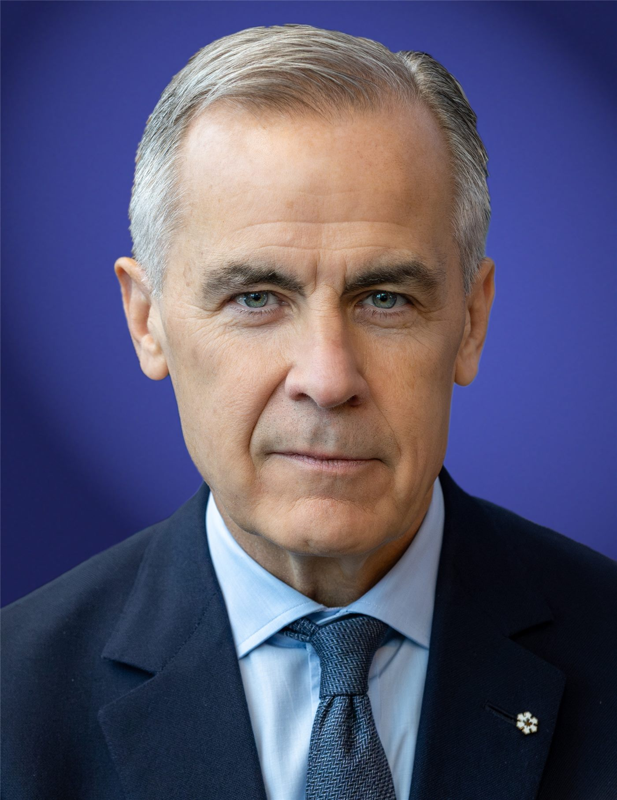

카니 캐나다 총리·마크롱 회담… 「새로운 위협 속 협력 강화」
마크 카니 캐나다 총리와 에마뉘엘 마크롱 프랑스 대통령이 만나, 세계적 위협 환경의 변화 속에서 양국 협력을 확대하기로 뜻을 모았다. 프랑스 해외 영토와 캐나다의 접점도 의제에 올랐다.
마약란 기자 · 2026.09.24
橋국제

캐나다와 프랑스 정상이 만나 안보와 경제 협력을 넓히는 방안을 논의했다. 양측은 안보 환경이 빠르게 바뀌는 국면에서 같은 가치를 공유하는 국가 간 연계를 강화할 필요가 있다는 데 인식을 같이한 것으로 전해졌다.
광고 문의 · 300×250회담에서는 프랑스가 북미 인근에 보유한 해외 영토와 캐나다 사이의 실무 협력도 다뤄졌다. 어업 관리, 해양 감시, 재난 대응 등 인접 지역 특유의 현안이 포함됐다.
캐나다는 최근 미국과의 무역·안보 조정 과정에서 유럽과의 관계를 두텁게 하는 방향으로 움직여 왔다. 방산 조달과 에너지 수출에서 유럽 수요를 겨냥한 접근도 그 일환이다.
프랑스로서는 인도·태평양과 북대서양에 걸친 해외 영토 관리에 파트너가 필요하다. 광범위한 배타적경제수역을 감시하려면 인접국과의 정보·자산 공유가 현실적 대안이 된다.
다만 구체적인 합의 문서가 공개되지는 않았다. 양국은 실무 협의를 이어 가며 분야별로 후속 조치를 구체화할 계획인 것으로 알려졌다.
동아시아 관점에서 눈여겨볼 대목은 「중견국끼리의 연결」이라는 흐름이다. 강대국 사이의 조정에만 기대지 않고 유사한 처지의 국가들이 직접 망을 만드는 시도는, 한국·대만을 포함한 여러 경제권에도 시사점을 남긴다.
출처·참고 (사실 확인용 — 본문은 직접 재작성)
· 자유시보 국제면 보도
· 캐나다·프랑스 정상 회담 발표 종합
· 자유시보 국제면 보도
· 캐나다·프랑스 정상 회담 발표 종합